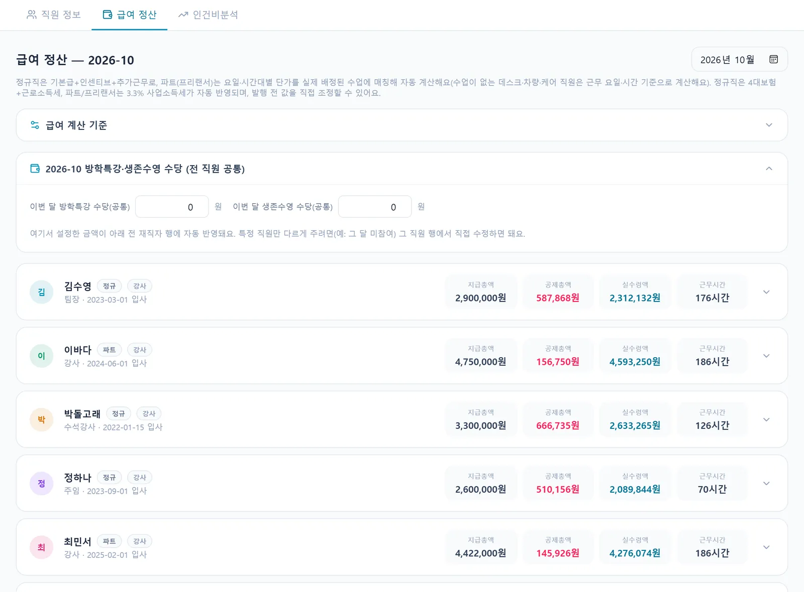
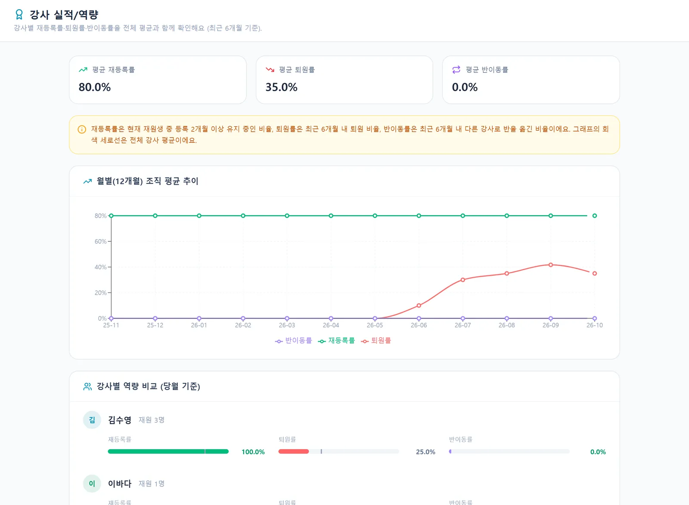

현장에서 들은 이야기
이런 불편, 겪고 계시죠
급여 지급 기준과 예상 급여를 확인할 수 있으면 좋겠습니다.
수영 강사 · 서울 종로구 · 설문 응답개인매출확인.
수영 강사 · 제주 · 설문 응답이렇게 사용해요
네 단계면 끝나요
- 급여 기준 등록
직원별 고용 형태와 월급, 요일·시간대별 단가를 정해요.
- 수업 자동 집계
실제 배정·진행된 수업과 보강을 기준으로 근무 시간을 계산해요.
- 명세서 발행
수당과 조정을 반영해 명세서를 발행하고 PDF로 저장해요.
- 실적 분석
강사별 재등록률·퇴원률·반이동률·매출을 평균과 비교해요.
정규·프리랜서를 한 번에
정규직은 기본급과 인센티브, 추가근무로, 파트·프리랜서는 요일·시간대 단가를 실제 수업에 맞춰 계산해요. 정규직 4대보험·근로소득세와 프리랜서 3.3%도 반영되고, 발행 전에 값을 조정할 수 있어요.
- 시간대별 단가 매칭
- 방학특강·생존수영 수당
- 명세서 인쇄·PDF
실적은 같은 기준으로
강사별 재등록률, 퇴원률, 반이동률과 월 매출을 전체 평균선과 함께 보여 줘요. 인센티브 규칙을 정해 두면 모두에게 같은 기준으로 계산돼요.
- 평균 비교 그래프
- 12개월 추이
- 인센티브 자동 계산 규칙

연차도 앱으로
강사는 앱에서 연차·반차·반반차를 신청하고, 원장·팀장이 승인하면 남은 연차가 자동으로 차감돼요.
- 연차·반차·반반차
- 잔여 연차 표시
- 승인 시 스케줄 반영
#01급여 계산 시간 단축
#02공정한 인센티브 기준
#03연차까지 한 번에
자주 묻는 질문
궁금한 점
프리랜서 강사의 시간대별 단가도 되나요?
요일·시간대별 단가 구간을 등록하면 실제 수업 시간에 맞춰 계산해요. 구간이 없으면 기본 시급이 적용돼요.
수당은 어떻게 넣나요?
방학특강·생존수영 수당은 전 직원 공통 금액으로 넣고, 특정 직원만 개별로 조정할 수 있어요.
급여 정보는 누가 볼 수 있나요?
월급·시급은 원장 계정만 보고 고칠 수 있어요.
강사 급여·실적, 30일 동안 무료로 써 보세요
강습생 수 제한 없이 모든 기능 · 초기 세팅 무료
화면은 SwimSync 체험용 예시 데이터로 찍었어요. 실제 이름·금액이 아니에요.